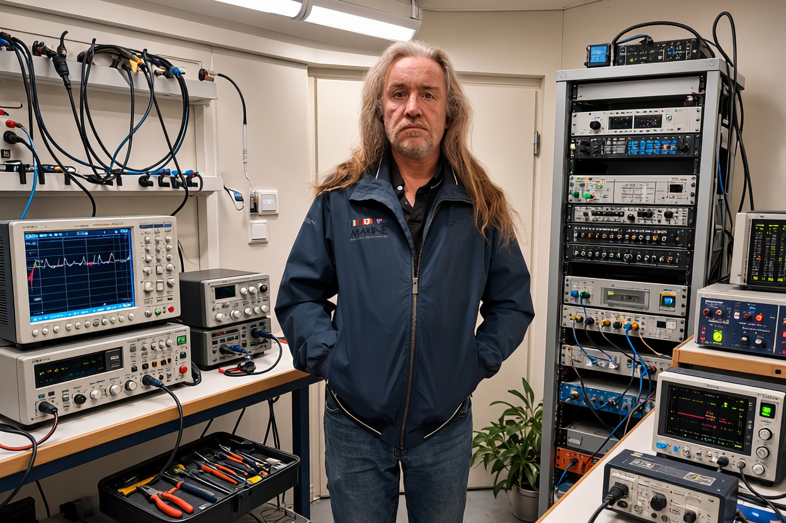

KEEMIA ÕPPEMÄNG INTERAKTIIVNE
Molecule Master
Interaktiivne keemia õppemäng: ehita molekule ning avasta sidemeid, ioone ja reaktsioone mängides.
Mängi Molecule MasteritSõltumatu digitaalne looja / Tallinn, Eesti
Ma loon digitaalseid kogemusi, kus läbimõeldud disain kohtub täpse teostusega. Selgelt, isikupäraselt ja kestma loodult.

01 VALITUD TÖÖD
Iga hea lahendus algab sisust.
Siin on mõned suunad, kuhu see võib viia.
KEEMIA ÕPPEMÄNG INTERAKTIIVNE
Interaktiivne keemia õppemäng: ehita molekule ning avasta sidemeid, ioone ja reaktsioone mängides.
Mängi Molecule Masterit
TÖÖKESKKOND / 02 ELEKTROONIKA · SIDETÖÖRUUM
Pilguheit elektroonika- ja sidetehnika seadmete keskele.
 TÖÖPÄEV / 03
TÖÖ KAASA, IDEED KAASA
TÖÖPÄEV / 03
TÖÖ KAASA, IDEED KAASA
MOBIILNE TÖÖ
Sülearvuti kaasas — hea mõte ei pea ootama õiget kontorit.
02 MINUST
Olen Priit — disaini ja arenduse piiril tegutsev digitaalne looja. Mulle meeldib leida keerulise seest lihtne mõte ning anda sellele vorm, mis tundub loomulik kasutada.
Tutvume lähemalt03 TÖÖPROTSESS
Vähem müra, rohkem mõtet.
Koostöö, mis viib ideest valmis asjani.
Saame eesmärgist, inimestest ja piirangutest päriselt aru. Õige küsimus säästab hiljem mitu ringi.
Seame fookuse, lepime kokku suuna ja teeme olulised otsused enne detailidesse sukeldumist.
Viin läbimõeldud lahenduse ellu — ligipääsetavalt, responsiivselt ja hoolikalt viimistletult.
Testime, viime viimased detailid paika ja annan kaasa selged juhised edasiseks.
04 JÄRGMINE HEA MÕTE
Kui otsid läbimõeldud partnerit oma järgmisele digitaalsele projektile, räägime.
Avatud sisukatele koostöödele · Tallinn / kõikjal